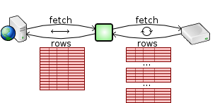
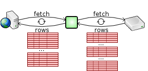
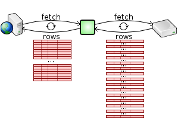
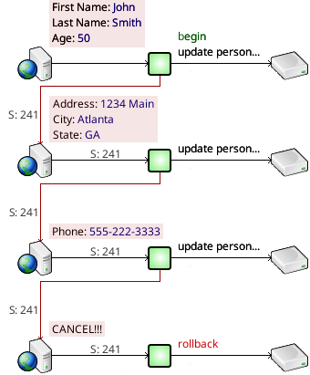
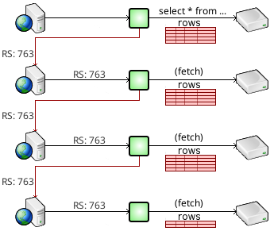

The SQL Relay native APIs are intuitive, consistent across languages, and supports powerful and unique features such as bind variables, substitution variables, multi-row fetches, suspended sessions, suspended result sets, and client-side result set caching.
The native SQL Relay client API currently supports C, C++, .NET languages, Java, Perl, Python, PHP, Ruby, TCL, Erlang, and node.js.
Programming guides with sample code and API references are available for each language:
|
|
Before executing a query, the database must prepare it - parse it and develop an execution plan. Even very similar queries must be prepared individually, and this prepare-time can add up.
Bind variables allow the query to be prepared once, with placeholders for values, and then executed over and over, plugging in values for each execution.
prepareQuery("select * from mytable where col1=:val1 and col2=:val2 and col3=:val3");
inputBind("val1","hello");
inputBind("val2",5);
inputBind("val2",20);
executeQuery();
inputBind("val1","goodbye");
inputBind("val2",7);
inputBind("val2",34);
executeQuery();
inputBind("val1","hi");
inputBind("val2",9);
inputBind("val2",23);
executeQuery();
... and so on ...
By eliminating the prepare-time before each execution, performance is improved significantly. The program is also much cleaner as the query doesn't have to be reconstructed for each execution.
The SQL Relay APIs support bind variables with all databases. If a database doesn't support bind variables natively, the SQL Relay server fakes them.
Bind variables can be used to replace values, but they cannot be used to replace table names, column names, entire expressions, or clauses. The SQL Relay APIs provide substitution variables for this purpose.
prepareQuery("select $(columns) from mytable $(whereclause)");
substitution("columns","*");
substitution("table","mytable");
substitution("whereclause","where stringcol='true' and integercol>10 and floatcol>1.1");
executeQuery();
substitution("columns","stringcol");
substitution("whereclause","where integercol=20 and floatcol<10.2");
executeQuery();
Substitution variables don't provide any performance improvement, but can make query construction much cleaner.
Multi-row fetches improve performance by reducing round-trips to the database.
To fetch a result set, most database API's provide a "fetch" function that fetches a single row. The app can then do something with that row and then fetch another row.
If instead, multiple rows were fetched at once and buffered, it would reduce the number of round-trips to the database and improve performance, at the cost of memory.
Some database API's do exactly this and provide a "fetchatonce" parameter that can be used to control how many rows are fetched at once.
When using a database that provides a "fetchatonce" parameter, SQL Relay exposes it in the configuration file and does multi-row fetches from the database.
The SQL Relay client goes even further. By default, it fetches the entire result set from the SQL Relay server in one round-trip.

For small result sets, like the ones that would likely be used to build a web page, this is very fast and usually doesn't consume an inordinate amount of memory. However for larger result sets, the necessary memory allocation can be inefficient and slow. To remedy this, the SQL Relay API's provide methods for setting how many rows will be fetched from the SQL Relay server and buffered at once.

Even if the database does not support multi-row fetches, the SQL Relay client can still do multi-row fetches from the SQL Relay server. If the SQL Relay server is run on the same machine as the database and the client is run on a separate machine, using SQL Relay can generally improves performance over native database access because of the reduced number of round-trips across the network while fetching the result set.

Suspended sessions allow a single session, and the currently open transaction of that session, to span successive invocations of an app, or to be passed between apps.

This can be useful when collecting multiple pages of information about a user, in an ecommerce checkout processes, or in other situations.
Suspended result sets allow an open result set to be accessed by successive invocations of an app, or to be passed between apps.

This can be useful in paging forwards through a large result set.
Client-side result set caching is a feature of the SQL Relay API that allows you to save whatever part of the result set that you have fetched so far to a local file.
This file can be re-opened later and rows that were already fetched can be read from it again
...and new rows can be appended to it.
When used with suspended result sets, this can be useful in paging backwards and forwards through a large result set.